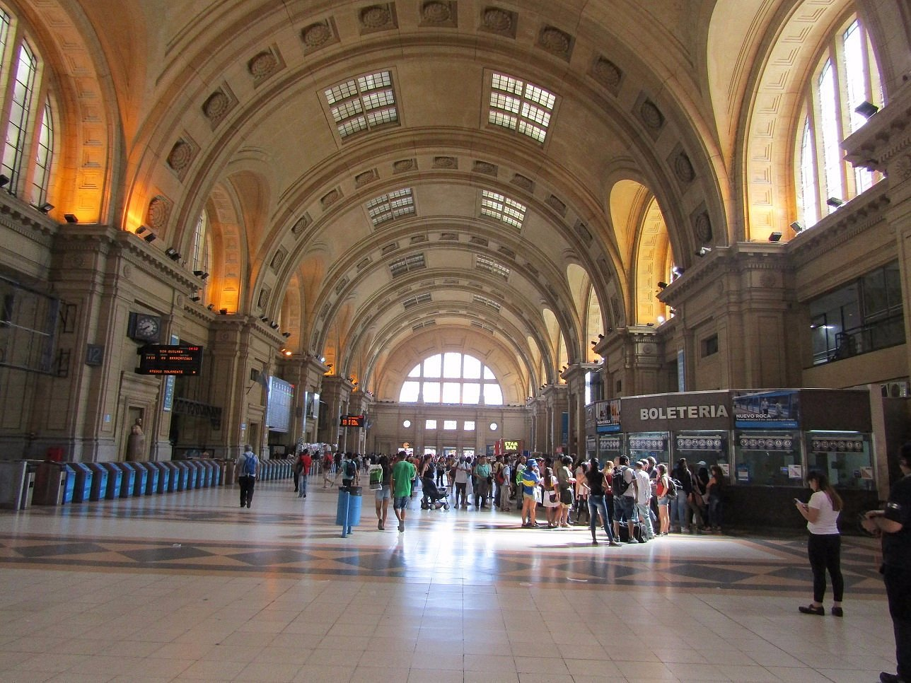

Plano de la Terminal
Conocé la distribución de nuestras plataformas y ubicá rápidamente el servicio que necesitás.

Servicios Disponibles
Baños
Ubicados en el Ala Norte y Sur. Cuentan con accesibilidad para personas con movilidad reducida.
Oficinas de Información
Atención 24 hs en el hall central. Asistencia al viajero y reclamos.
Locales Gastronómicos
Patio de comidas en el 1er piso con cafeterías y locales de comida rápida.
Áreas de Espera
Sectores climatizados con asientos ergonómicos y enchufes para dispositivos móviles.
Estacionamiento
Parking subterráneo con capacidad para 500 vehículos. Ingreso por calle principal.
Servicio Complementario: Preguntas Frecuentes (FAQ)
Resolvé tus dudas rápidas antes de viajar:
Sí, ofrecemos Wi-Fi público y gratuito de alta velocidad en todas las áreas de espera y locales gastronómicos.
Las terminales de autogestión para recarga se encuentran distribuidas frente a los andenes de salida y al lado de la Oficina de Información.